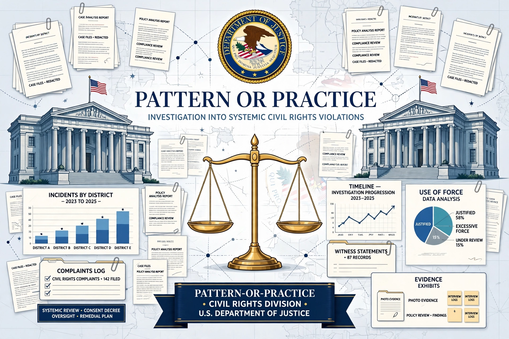

Pattern or practice is a legal term in United States law referring to a systematic, repeated course of conduct — as opposed to an isolated act — that violates civil rights or other laws. It is central to federal enforcement against police misconduct and employment discrimination.

The Violent Crime Control and Law Enforcement Act of 1994 (now 34 U.S.C. § 12601) authorizes the Attorney General to sue police departments engaged in a pattern or practice of conduct depriving persons of constitutional rights. Investigations of departments in cities including Ferguson, Baltimore, Chicago and Minneapolis have led to consent decrees overseen by federal monitors.
Under Title VII of the Civil Rights Act of 1964, the EEOC and Justice Department may bring pattern-or-practice suits alleging systematic discrimination in hiring, promotion or pay, using statistical evidence alongside individual examples. Landmark cases include International Brotherhood of Teamsters v. United States (1977).
The term also appears in housing discrimination enforcement under the Fair Housing Act and in voting rights litigation.